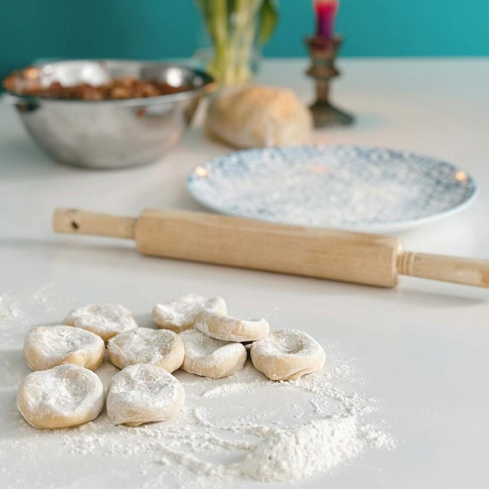

développeuse web & wordpress
à propos de moi
Forte d’une expérience croisée agence / freelance, je développe des interfaces responsives, accessibles et performantes. J'applique la méthode DRY (Don't Repeat Yourself) afin de concevoir des composants réutilisables, maintenables et conformes aux bonnes pratiques du web. Mon code est structuré, commenté et pensé pour rester flexible. Problem solver, autonome et bonne communicante, je collabore efficacement avec les parties prenantes pour mener à bien les projets digitaux.
compétences
Frontend : HTML5,
CSS3, BEM,
SASS, SCSS,
Vanilla
JS
Backend : PHP, SQL,
MySQL,
Composer,
NPM
Framework :
Bootstrap,
jQuery,
architecture
MVC
CMS :
WordPress,
Webflow,
Prestashop,
Proximis
Webdesign :
Figma, XD,
Photoshop,
Illustrator,
InDesign
Normes : W3C,
Accessibilité,
SEO,
Performance
Gestion de projets :
GIT,
Gitlab, Jira,
Teams, Microsoft 365
Langues :
Anglais
(niveau B2) &
Espagnol
(niveau
A2)
expériences
- Développements full-stack WordPress : fil d’Ariane dynamique multilingue ; popups ; scripts de tracking Google Tag Manager.
- Optimisation responsive avec attention portée à la performance et à la maintenabilité du code.
- Participation active aux sessions de réflexion stratégique pour la conception des campagnes Google Ads.
- Création de A à Z site vitrine ; mise à jour & création de nouvelles pages + fiches-produits (images, textes).
- Migrations, maintenance + assistance client ; optimisations UI & UX d’un site en version mobile.
- Création & retouches d’infographies, amélioration de la performance (Google PageSpeed) et SEO.
- Création de fiches-produits (argumentaires marketing, maillage interne SEO, etc.).
- Intégration responsive de diverses pages de contenu (HTML, CSS).
- Optimisation performance des pages web & du SEO ; retouches & création visuels produit (Photoshop).
- Maquettage UI diverses pages web (accueil, en-tête, pied-de-page, connexion, etc.)
- Intégrations en responsive de maquettes graphiques + refontes pages web sur tablettes et mobiles.
- Ajout de fonctionnalités + maintenance technique ; MAJ des contenus de 6 sites web.
- Élaboration du cahier de charges et devis client.
- Création du logo et de la charte graphique.
- Conception et réalisation (A à Z) d'un e-Commerce WordPress pour une pâtisserie (maquettage UI, WooCommerce, paiement en ligne, textes SEO, etc.).
- Création d’un bloc Gutenberg WordPress sur-mesure (ACF, PHP) + Gestion d’un site multilingue WordPress.
- Refonte de la page 404 + intégration landing pages WordPress (HTML5, CSS3, PHP).
- Élaboration en anglais d'un guide du contributeur WordPress pour un site Corporate.
formations
École DORANCO, Paris
Coding Academy by EPITECH, Paris
Association Philotechnique, Paris
Université de Douala
centres d'intérêt
